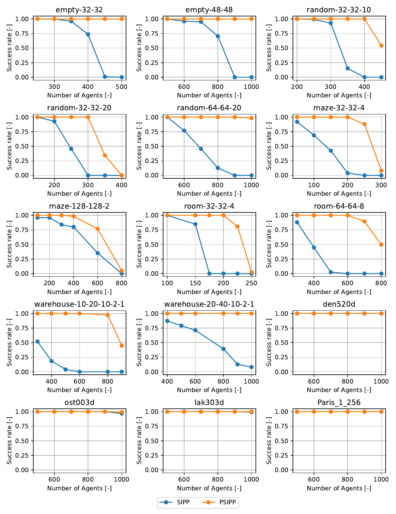
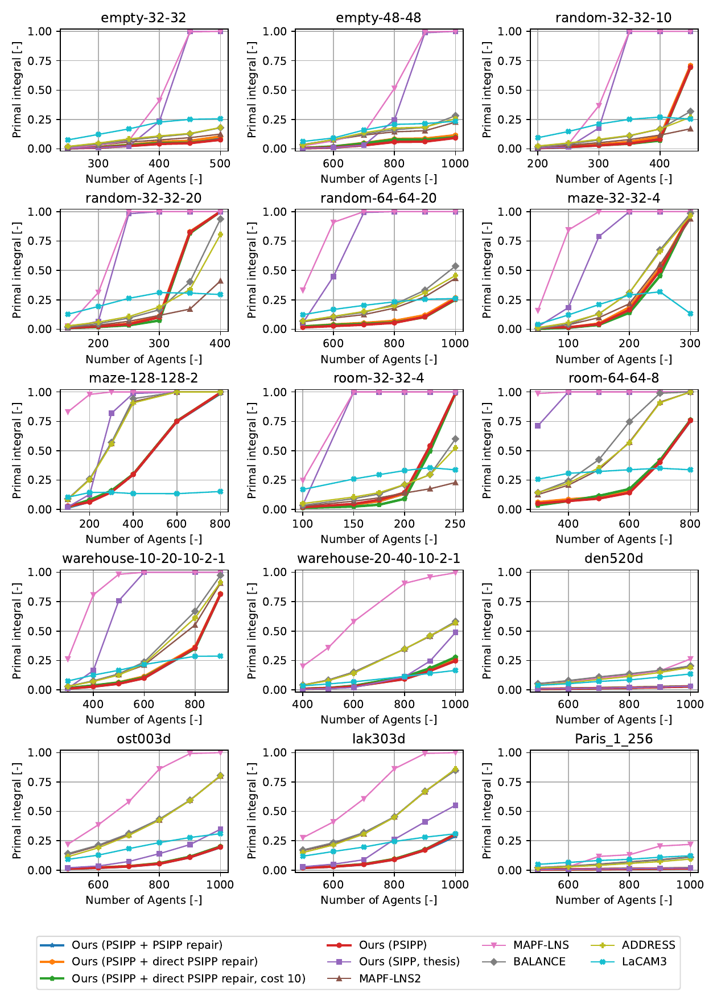

PSIPP Experiment Report
What was changed in the solver, which experiments ran on the CIIRC cluster, and what they show about prioritized planning with pushing (PSIPP) as the initial-solution method of our LNS solver.
PSIPP as the LNS replanner: tested, no overall gain
PSIPP is now also available in the LNS repair step. A destroyed agent may push agents outside the neighborhood; the pushed agents are replanned and join the neighborhood, and the new solution is accepted only if the total SoC goes down. Three repair variants ran in the 5-seed state-of-the-art grid (11 250 runs each), all with the same PSIPP initial solution:
- PSIPP+rp: SIPP first, PSIPP only if SIPP fails, push cost ∞ (same as the initial solution).
- PSIPP+rpd: PSIPP directly, push cost ∞.
- PSIPP+rpd c10: PSIPP directly, push cost 10, so a push can be chosen over a long detour.
Result. With push cost ∞ the repair almost always finds SIPP's path anyway; it only adds overhead, so fewer LNS iterations fit into 60 s and the final solutions are slightly worse. Push cost 10 really changes the paths: it helps on the small dense maps (room-32-32-4 −3.8%, maze-32-32-4 −2.8%, random-32-32-20 −1.5% SoC) and hurts on the large ones (empty-48-48, maze-128, room-64-64-8 +1.1–1.5%). Overall it is −0.14%. Every difference has the same sign on all 5 seeds. The anytime curves of the four PSIPP variants lie on top of each other; success rates are identical (92.0%) because the repair does not affect the first solution.
| Repair vs plain PSIPP (SIPP repair) | Mean SoC change | Seed range | LNS iterations | Primal integral |
|---|---|---|---|---|
| Ours (PSIPP), SIPP repair | 0 | – | 1× | 0.1594 |
| PSIPP+rp (SIPP first) | +0.12% | +0.08 … +0.16% | 0.84× | 0.1603 |
| PSIPP+rpd (direct) | +0.65% | +0.57 … +0.72% | 0.59× | 0.1657 |
| PSIPP+rpd c10 (direct, cost 10) | −0.14% | −0.21 … −0.09% | 0.63× | 0.1598 |
Final SoC relative to plain PSIPP on the runs both solved (same instance and seed); negative is better. Iterations: median ratio. 60 s limit.
So PSIPP as a replanner is not a clear win. Push cost 10 is worth keeping as an option for dense maps, where we are weakest against MAPF-LNS2, but it does not close that gap.
Summary
PSIPP finds a first solution far more often than plain SIPP prioritized planning, and it does not cost solution quality. With the thesis LNS on top, the full solver has the lowest primal integral of all seven solvers tested and the best final solution quality by a wide margin, on 5 seeds per instance with very small spread between seeds. Using PSIPP also inside the LNS repair does not improve this overall. It is not the most robust solver: LaCAM3 solves every instance, and MAPF-LNS2 is better on small dense maps.
What PSIPP is
Our solver builds an initial solution with prioritized planning (PP): agents are planned one by one with SIPP, each avoiding the paths already planned. If an agent finds no path, the attempt fails and PP restarts with a new order. This is the "SIPP" baseline throughout the report.
PSIPP changes the low-level search. When the agent being planned is blocked, its search may push an already planned agent: the search assumes that agent waits one step back in its previous cell, and the pushed agent is then replanned. An attempt fails if a pushed agent cannot be replanned or if the same agent would be pushed twice in one chain (a cycle).
The configuration used in every comparison is cinf_cl0_sf1:
- SIPP first (
sf1): each agent is first planned with plain SIPP; PSIPP is called only if that fails. - Push cost infinite (
cinf): any push-free path is preferred to any path with a push. - One closed list (
cl0), not one per push count. - At most 5 pushes per planned path.
- Agent order: longest-first on the first attempt, random on restarts. In Experiment 3, SIPP uses longest-first on every attempt (each planner gets its best order, see Experiment 2); in Experiment 4, SIPP uses random order.
The LNS improvement phase is the final thesis configuration: BLOCKED destroy operator, neighborhood size 8, bounded-suboptimal SIPP repair (SIPP_suboptimal_ap, w = 1, p = 5).
Code changes and bugs fixed
All of these are committed on push-and-sipp and pushed. Each bug was confirmed with a reproducing case before it was fixed, and each fix has a unit test (156 unit tests pass, 8 disabled).
Bugs found and fixed
| Bug | Effect | Commit |
|---|---|---|
PP replanned a pushed agent with another agent's SIPP call (plan(agent_id, …) instead of plan(*it, …)) | A pushed agent could get a path for the wrong start and goal | a411149 |
PSIPPNode constructor emptied the caller's list of pushed agents | Later nodes forgot earlier pushes, so a path could go through an agent never recorded as pushed. This caused the 89 crashes in an early cluster run. | 11a600f |
get_all_intervals did not return intervals covering the whole window | Agents parked at their goals could never be pushed. Fixing it raised PSIPP from about 414 to 648 of 650 solved runs in the variant grid. | 59fa5da |
| PSIPP created the "enter after the pushed agent leaves" move without checking that the agent can wait that long | A stretched wait could collide with an agent that was never pushed. One invalid solution in the ordering runs, caught by the independent validator. | 117446a |
| Destroy operators: random destroy with neighborhood equal to agent count; random walk of size 1 | Crash / wrong behaviour on small instances | f464aa7 |
LNS: agents restored after a failed repair, and all agents of a loaded initial solution, were missing from already_planned | The repair (SIPP or PSIPP, _ap variants) penalised their goal cells as if those agents were still unplanned, which led to needless detours. Found while adding PSIPP repair; all our SOTA runs use the fix. | working tree |
| GUI: pressing play when no LNS iteration exists (must_push scenario) | Segmentation fault. Visualizer::next_iteration now pauses at the last iteration. Not committed yet; please test it. | working tree |
New options and improvements
| Change | Why | Commit |
|---|---|---|
sipp_first, push_cost, closed list per push count, CLI flags | Variants to test whether pushes come too late in the search (Experiment 1) | 564b8a1, 8cb0b39, 5aa0b58, 7bcec07 |
| Failure counters (no path vs push cycle, replanned pushed agents) | To see why attempts fail | bca03c2 |
| Shared pushed-constraint lists, one random tie key per node | About 35–40% faster PSIPP on room and warehouse maps | f836712 |
| PP agent order: random, shortest-first, longest-first, optionally first attempt only | Ordering study (Experiment 2) | c5bc602 |
| Parked agents on gap-free cells can be pushed; heuristic after a push; review cleanups | Findings of the final code review | 45b9845 |
PSIPP in the LNS repair: psipp_repair, repair_sipp_first, repair_push_cost (own planner if the cost differs) | PSIPP as the replanner (top of this page) | working tree |
| Headless benchmark drivers, cluster scripts, result analysis | All experiments below | 29e5c4e and later; SOTA scripts uncommitted |
Experiment 1: which PSIPP variant
Question. Do pushes come too late in the search? With infinite push cost, PSIPP explores every push-free path before any push, so on a blocked instance it first repeats SIPP's failing search. A finite push cost or a closed list per push count could reach good pushes earlier.
Setup. Cluster job 436535: 7 maps, 25 scenarios, 60 s, 650 runs per variant. The grid crossed push cost (0, 2, 10, 50, ∞), closed list (one, or one per push count) and SIPP first (on/off). Run after the get_all_intervals fix.
| Variant | Solved / 650 | Before the fix |
|---|---|---|
| psipp_cinf_cl0_sf1 | 648 | 414 |
| psipp_cinf_cl0_sf0 | 645 | – |
| psipp_cinf_cl1_sf1 | 641 | 424 |
| psipp_c50_cl0_sf1 | 634 | 420 |
| sipp | 370 | 370 |
The other finite push costs were worse still. Push cost 0 or 2 is clearly bad: agents push each other back and forth until the cycle check fails the attempt.
Result. The idea did not pay off. The simplest variant (infinite push cost, one closed list, SIPP first) is the best, and the large gain came from the bug fix, not from search changes. That variant is used everywhere below.
Experiment 2: agent order
Question. Your supervisor suggested looking at the agent ordering (Kulich's group). Their papers do not propose an ordering rule of their own; they cite distance-to-goal and longest-path-first (ter Mors 2011). I implemented random, shortest-first and longest-first, each optionally only for the first attempt.
Setup. Jobs 437094 (SIPP) and 438289 (PSIPP, rerun after the stretched-wait fix): 7 maps, 25 scenarios, 60 s, 650 runs per variant. par2 is the mean runtime with unsolved runs counted as twice the time limit.
| Order | PSIPP solved | PSIPP par2 [s] | SIPP solved | SIPP par2 [s] | SoC vs random |
|---|---|---|---|---|---|
| random | 648 | 2.26 | 361 | 56.2 | 1.00 |
| longest-first | 645 | 3.52 | 378 | 52.9 | +6–7% |
| longest-first, 1st attempt only | 650 | 1.99 | 369 | 54.2 | +5–6% |
| shortest-first | 626 | 7.03 | 180 | 87.3 | −7–8% |
| shortest-first, 1st attempt only | 648 | 2.64 | 367 | 55.3 | −4–6% |
Result. Longest-first helps feasibility a little; shortest-first gives cheaper first solutions but fails more often. The differences are small next to the PSIPP vs SIPP gap. The initial SoC penalty of longest-first does not matter much because LNS improves the solution afterwards. Chosen: PSIPP with longest-first on the first attempt only, SIPP with longest-first always.
Experiment 3: SIPP vs PSIPP initial solution
Question. Does pushing make PP find a first solution more often and faster, and at what cost in solution quality?
Setup. Job 439289, 22 500 runs. 15 maps from the MovingAI benchmark (empty, random, maze, room, warehouse, game maps and a city), 25 scenarios each, 6 agent counts per map picked by a calibration run to span "both solve it" to "both struggle", 5 seeds. Each run is PP with restarts until a solution or 60 s, single-threaded. The 10 s results are the same runs cut at 10 s (the runs are deterministic for a seed). Every solution was checked by an independent validator; none was invalid. 7 runs were killed at the hard timeout (PSIPP on maze-128-128-2) and are counted as failures.
Statistics. Success with Wilson 95% intervals and a paired McNemar test; time and SoC as geometric-mean ratios on instances both solved, with a Wilcoxon test.
| Map | SIPP solved | PSIPP solved | Only PSIPP | Only SIPP | Time PSIPP/SIPP | SoC PSIPP/SIPP |
|---|---|---|---|---|---|---|
| empty-32-32 | 61.7% | 100.0% | 287 | 0 | 0.28 | 0.9982 |
| empty-48-48 | 60.3% | 100.0% | 298 | 0 | 0.32 | 0.9985 |
| random-32-32-10 | 51.2% | 92.4% | 309 | 0 | 0.22 | 0.9995 |
| random-32-32-20 | 39.7% | 72.4% | 245 | 0 | 0.22 | 1.0036 |
| random-64-64-20 | 39.2% | 99.7% | 454 | 0 | 0.22 | 0.9967 |
| maze-32-32-4 | 34.5% | 82.7% | 361 | 0 | 0.69 | 1.0054 |
| maze-128-128-2 | 65.2% | 80.0% | 111 | 0 | 1.00 | 1.0001 |
| room-32-32-4 | 30.8% | 80.5% | 373 | 0 | 0.18 | 1.0304 |
| room-64-64-8 | 22.5% | 89.9% | 505 | 0 | 0.37 | 1.0031 |
| warehouse-10-20-10-2-1 | 12.4% | 90.4% | 585 | 0 | 0.39 | 1.0001 |
| warehouse-20-40-10-2-1 | 49.6% | 100.0% | 378 | 0 | 0.86 | 1.0002 |
| den520d | 100.0% | 100.0% | 0 | 0 | 1.07 | 1.0000 |
| ost003d | 99.5% | 99.9% | 3 | 0 | 1.03 | 0.9999 |
| lak303d | 99.9% | 100.0% | 1 | 0 | 1.05 | 0.9999 |
| Paris_1_256 | 100.0% | 100.0% | 0 | 0 | 1.09 | 1.0000 |
| Map | SIPP solved | PSIPP solved | Only PSIPP | Only SIPP | Time PSIPP/SIPP | SoC PSIPP/SIPP |
|---|---|---|---|---|---|---|
| empty-32-32 | 57.2% | 100.0% | 321 | 0 | 0.41 | 0.9986 |
| empty-48-48 | 53.6% | 99.9% | 347 | 0 | 0.47 | 0.9995 |
| random-32-32-10 | 47.6% | 85.2% | 282 | 0 | 0.30 | 1.0000 |
| random-32-32-20 | 36.8% | 68.3% | 236 | 0 | 0.31 | 1.0020 |
| random-64-64-20 | 32.5% | 91.3% | 441 | 0 | 0.37 | 0.9974 |
| maze-32-32-4 | 33.9% | 74.0% | 301 | 0 | 0.76 | 1.0037 |
| maze-128-128-2 | 51.6% | 52.0% | 9 | 6 | 1.02 | 1.0000 |
| room-32-32-4 | 28.8% | 72.0% | 324 | 0 | 0.25 | 1.0291 |
| room-64-64-8 | 19.6% | 73.2% | 402 | 0 | 0.55 | 1.0022 |
| warehouse-10-20-10-2-1 | 11.5% | 73.2% | 463 | 0 | 0.47 | 1.0004 |
| warehouse-20-40-10-2-1 | 42.9% | 65.3% | 170 | 2 | 1.00 | 1.0001 |
| den520d | 100.0% | 100.0% | 0 | 0 | 1.07 | 1.0000 |
| ost003d | 77.7% | 78.9% | 14 | 5 | 1.03 | 1.0000 |
| lak303d | 68.3% | 69.1% | 8 | 2 | 1.05 | 1.0000 |
| Paris_1_256 | 100.0% | 100.0% | 0 | 0 | 1.09 | 1.0000 |
Per map, 750 paired instances each. Time and SoC ratios are geometric means over instances both planners solve; below 1 means PSIPP is faster or cheaper. Green: PSIPP at least 5% faster; red: PSIPP slower or more than 1% costlier.

The thesis-style per-map figures for the paper (PDF versions are in the experiment output folder).
Where PSIPP gains. Dense maps with corridors and rooms. On room-32-32-4 at 200 agents SIPP solves 0% and PSIPP 100%; on warehouse-10-20 at 600 agents 0% vs 100%; on empty-48-48 at 900 agents 0% vs 100%. Restarts drop from 38.6 to 8.0 on solved instances.
Where it does not. On the large, sparse game maps (den520d, ost003d, lak303d, Paris) both planners solve almost everything, and PSIPP is 3–9% slower because the SIPP-first call and the push bookkeeping add overhead. On maze-128-128-2 at 10 s the two are tied (390 vs 387, 6 instances solved only by SIPP). On room-32-32-4 PSIPP solutions are 3% costlier, because pushes produce detours and waits.
Experiment 4: comparison with the state of the art
Question. How does the full solver (PSIPP initial solution + thesis LNS) compare with the current anytime MAPF solvers, both in finding a first solution and in improving it?
Setup. 112 500 runs: 10 solver configurations × the same 15 maps, 25 scenarios and 6 agent counts as Experiment 3 × 5 seeds, 60 s per run, one thread, 8 GB memory limit. Seeds 1–4 ran on the CIIRC compute partition (Xeon E5-2690 v4) and seed 5 on the gpu-[1-4] nodes used as CPU nodes (Xeon Gold 6140, faster). Every solver ran each seed on the same hardware. MAPF-LNS hard-coded srand(0), so it was patched with a --seed option. The seed-1 runs of MAPF-LNS2, BALANCE, ADDRESS and LaCAM3 are the runs of the earlier one-seed job 439791. Jobs 440299, 440526, 440529; 216 runs lost when I replaced the run script during the job were rerun in job 441403. Each baseline was built from a pinned commit with its README settings. All solutions were re-validated by our own checker, and the reported SoC matched the validated SoC in every run.
| Solver | Method | Settings | Commit |
|---|---|---|---|
| Ours (PSIPP) | PP with PSIPP + restarts, then LNS (BLOCKED destroy, suboptimal SIPP repair) | cinf_cl0_sf1, longest-first 1st attempt, neighborhood 8 | 45b9845 + working tree |
| PSIPP+rp | Same, LNS repair with PSIPP after SIPP fails | repair push cost ∞ | same |
| PSIPP+rpd | Same, LNS repair with PSIPP directly | repair push cost ∞ | same |
| PSIPP+rpd c10 | Same, LNS repair with PSIPP directly | repair push cost 10 | same |
| Ours (SIPP, thesis) | Same as Ours (PSIPP), with plain SIPP PP | random order | same |
| MAPF-LNS2 | Li et al. AAAI 2022: PP + collision-repairing LNS, then anytime LNS | defaults | 1369823 |
| MAPF-LNS | Li et al. IJCAI 2021: PP initial solution, anytime LNS | initAlgo PP, neighborhood 8 (as in the thesis); patched to write paths and to take --seed | 95785de |
| BALANCE | Phan et al. AAAI 2024: bandit-tuned LNS neighborhoods | Thompson sampling, candidate sizes 5 (README) | 47bb25e |
| ADDRESS | AAAI 2025: restricted Thompson sampling of delayed agents | RandomWalk, bernoulie, k = 64 (README) | b3d35c4 |
| LaCAM3 | Okumura 2024: anytime LaCAM* | single thread; logging patched to report SoC | 1c3ecf8 |
Metrics
- Success
- A valid first solution within the time limit.
- Time to first
- Mean time to the first solution, including map preprocessing; an unsolved run counts as the full limit.
- Primal integral
- The anytime metric. At each moment, p(t) = (SoC(t) − best) / SoC(t), and p = 1 while there is no solution. Averaged over [0, limit], so 0 is the best known solution found instantly and 1 is no solution at all. It rewards finding a solution early and improving it fast.
- GAP
- (final SoC − best known) / best known, averaged over the runs every solver solved. Best known is the lowest SoC any solver reached on that instance in any seed; there is no optimality bound at these sizes.
- Head to head
- Per instance, which of two solvers ends with the lower SoC; no solution counts as the worst.
All instances
| Solver | Success | Mean time to first [s] | Primal integral | GAP to best (n=4726) |
|---|---|---|---|---|
| Ours (PSIPP + PSIPP repair) | 92.0% | 8.10 | 0.160 | 0.47% |
| Ours (PSIPP + direct PSIPP repair) | 92.0% | 8.14 | 0.166 | 0.76% |
| Ours (PSIPP + direct PSIPP repair, cost 10) | 92.0% | 8.17 | 0.160 | 0.67% |
| Ours (PSIPP) | 92.0% | 8.13 | 0.159 | 0.52% |
| Ours (SIPP, thesis) | 57.8% | 27.80 | 0.469 | 0.56% |
| MAPF-LNS2 | 92.7% | 11.20 | 0.256 | 4.65% |
| MAPF-LNS | 42.1% | 37.80 | 0.656 | 6.50% |
| BALANCE | 90.1% | 13.01 | 0.291 | 5.17% |
| ADDRESS | 91.4% | 11.96 | 0.279 | 4.94% |
| LaCAM3 | 100.0% | 2.33 | 0.188 | 8.90% |
| Solver | Success | Mean time to first [s] | Primal integral | GAP to best (n=3702) |
|---|---|---|---|---|
| Ours (PSIPP + PSIPP repair) | 82.8% | 2.95 | 0.318 | 0.47% |
| Ours (PSIPP + direct PSIPP repair) | 82.5% | 2.97 | 0.323 | 0.84% |
| Ours (PSIPP + direct PSIPP repair, cost 10) | 82.5% | 2.98 | 0.319 | 0.76% |
| Ours (PSIPP) | 82.6% | 2.96 | 0.316 | 0.50% |
| Ours (SIPP, thesis) | 50.7% | 5.74 | 0.579 | 0.49% |
| MAPF-LNS2 | 72.9% | 4.48 | 0.506 | 8.14% |
| MAPF-LNS | 33.3% | 7.41 | 0.766 | 9.55% |
| BALANCE | 69.1% | 4.78 | 0.539 | 8.76% |
| ADDRESS | 71.8% | 4.54 | 0.515 | 7.99% |
| LaCAM3 | 99.1% | 2.31 | 0.338 | 7.19% |
11 250 runs per solver (2 250 instances × 5 seeds). The best value of each column is in blue. The 10 s results are the 60 s runs cut at 10 s.
Spread over seeds
| Solver | Success, mean over seeds | std | min–max | Primal integral, mean | std | min–max |
|---|---|---|---|---|---|---|
| Ours (PSIPP + PSIPP repair) | 92.0% | 0.29% | 91.6%–92.4% | 0.1603 | 0.0043 | 0.1533–0.1639 |
| Ours (PSIPP + direct PSIPP repair) | 92.0% | 0.35% | 91.6%–92.5% | 0.1657 | 0.0048 | 0.1578–0.1706 |
| Ours (PSIPP + direct PSIPP repair, cost 10) | 92.0% | 0.35% | 91.6%–92.5% | 0.1598 | 0.004 | 0.1536–0.1644 |
| Ours (PSIPP) | 92.0% | 0.27% | 91.7%–92.4% | 0.1594 | 0.0041 | 0.1526–0.1629 |
| Ours (SIPP, thesis) | 57.8% | 0.17% | 57.6%–58.0% | 0.4692 | 0.0028 | 0.4646–0.4718 |
| MAPF-LNS2 | 92.7% | 0.27% | 92.4%–93.0% | 0.2555 | 0.0068 | 0.2438–0.2615 |
| MAPF-LNS | 42.1% | 0.21% | 42.0%–42.4% | 0.6558 | 0.0037 | 0.6502–0.6601 |
| BALANCE | 90.1% | 0.34% | 89.8%–90.6% | 0.2914 | 0.0073 | 0.2786–0.2965 |
| ADDRESS | 91.4% | 0.20% | 91.2%–91.6% | 0.2787 | 0.0068 | 0.2668–0.2833 |
| LaCAM3 | 100.0% | 0.00% | 100.0%–100.0% | 0.1879 | 0.003 | 0.1827–0.1900 |
| Solver | Success, mean over seeds | std | min–max | Primal integral, mean | std | min–max |
|---|---|---|---|---|---|---|
| Ours (PSIPP + PSIPP repair) | 82.8% | 0.60% | 82.4%–83.8% | 0.3175 | 0.0097 | 0.3004–0.3232 |
| Ours (PSIPP + direct PSIPP repair) | 82.5% | 0.74% | 82.0%–83.8% | 0.3227 | 0.011 | 0.3031–0.3295 |
| Ours (PSIPP + direct PSIPP repair, cost 10) | 82.5% | 0.66% | 81.8%–83.5% | 0.319 | 0.0093 | 0.3026–0.3249 |
| Ours (PSIPP) | 82.6% | 0.53% | 82.3%–83.6% | 0.3164 | 0.0096 | 0.2996–0.3226 |
| Ours (SIPP, thesis) | 50.7% | 0.46% | 50.3%–51.4% | 0.5793 | 0.0063 | 0.5697–0.5854 |
| MAPF-LNS2 | 72.9% | 0.69% | 72.3%–74.0% | 0.5062 | 0.0141 | 0.4813–0.5149 |
| MAPF-LNS | 33.3% | 0.56% | 32.6%–34.0% | 0.7656 | 0.0069 | 0.7541–0.7711 |
| BALANCE | 69.1% | 0.95% | 68.2%–70.7% | 0.5394 | 0.014 | 0.5146–0.5477 |
| ADDRESS | 71.8% | 0.90% | 71.1%–73.3% | 0.5146 | 0.0145 | 0.4888–0.5229 |
| LaCAM3 | 99.1% | 0.44% | 98.8%–99.9% | 0.3383 | 0.0154 | 0.3110–0.3474 |
Each seed's overall value, then mean, standard deviation and range over the 5 seeds. Seed 5 ran on the faster gpu nodes: every solver has an 11–24% lower median time to the first solution there and up to 0.6 points higher success, so seed 5 is at the top of most ranges. The success ranking of the solvers is the same on every seed.
Head to head: final solution of PSIPP against each solver
| PSIPP vs | PSIPP better | Equal | PSIPP worse | Both unsolved | Share of decided |
|---|---|---|---|---|---|
| Ours (PSIPP + PSIPP repair) | 5093 | 1065 | 4199 | 893 | 55% |
| Ours (PSIPP + direct PSIPP repair) | 8079 | 109 | 2174 | 888 | 79% |
| Ours (PSIPP + direct PSIPP repair, cost 10) | 6428 | 94 | 3838 | 890 | 63% |
| Ours (SIPP, thesis) | 7546 | 93 | 2715 | 896 | 74% |
| MAPF-LNS2 | 9096 | 32 | 1719 | 403 | 84% |
| MAPF-LNS | 10018 | 24 | 310 | 898 | 97% |
| BALANCE | 9691 | 24 | 956 | 579 | 91% |
| ADDRESS | 10114 | 10 | 617 | 509 | 94% |
| LaCAM3 | 10301 | 0 | 949 | 0 | 92% |
| PSIPP vs | PSIPP better | Equal | PSIPP worse | Both unsolved | Share of decided |
|---|---|---|---|---|---|
| Ours (PSIPP + PSIPP repair) | 4968 | 764 | 3601 | 1846 | 58% |
| Ours (PSIPP + direct PSIPP repair) | 7705 | 65 | 1550 | 1859 | 83% |
| Ours (PSIPP + direct PSIPP repair, cost 10) | 6517 | 75 | 2733 | 1854 | 70% |
| Ours (SIPP, thesis) | 6769 | 68 | 2519 | 1823 | 73% |
| MAPF-LNS2 | 8806 | 19 | 872 | 1482 | 91% |
| MAPF-LNS | 9205 | 14 | 77 | 1883 | 99% |
| BALANCE | 9067 | 7 | 385 | 1720 | 96% |
| ADDRESS | 9135 | 4 | 463 | 1577 | 95% |
| LaCAM3 | 9122 | 0 | 2056 | 1 | 82% |
The bar shows PSIPP's share of the decided instances (green: PSIPP better).
Per map: success rate
| Map | PSIPP+rp | PSIPP+rpd | PSIPP+rpd c10 | PSIPP | SIPP | LNS2 | LNS | BALANCE | ADDRESS | LaCAM3 |
|---|---|---|---|---|---|---|---|---|---|---|
| empty-32-32 | 100% | 100% | 100% | 100% | 66% | 100% | 64% | 100% | 100% | 100% |
| empty-48-48 | 100% | 100% | 100% | 100% | 66% | 100% | 64% | 100% | 100% | 100% |
| random-32-32-10 | 92% | 92% | 92% | 92% | 49% | 100% | 48% | 100% | 100% | 100% |
| random-32-32-20 | 72% | 72% | 72% | 72% | 34% | 100% | 31% | 86% | 91% | 100% |
| random-64-64-20 | 100% | 100% | 100% | 100% | 30% | 100% | 18% | 100% | 99% | 100% |
| maze-32-32-4 | 81% | 81% | 81% | 81% | 36% | 84% | 20% | 79% | 79% | 100% |
| maze-128-128-2 | 78% | 77% | 77% | 77% | 39% | 55% | 4% | 53% | 55% | 100% |
| room-32-32-4 | 80% | 80% | 80% | 80% | 17% | 100% | 16% | 96% | 96% | 100% |
| room-64-64-8 | 88% | 88% | 88% | 88% | 8% | 75% | 0% | 66% | 77% | 100% |
| warehouse-10-20-10-2-1 | 90% | 90% | 90% | 90% | 40% | 92% | 22% | 87% | 90% | 100% |
| warehouse-20-40-10-2-1 | 100% | 100% | 100% | 100% | 96% | 100% | 47% | 100% | 100% | 100% |
| den520d | 100% | 100% | 100% | 100% | 100% | 100% | 99% | 100% | 100% | 100% |
| ost003d | 99% | 99% | 99% | 99% | 97% | 94% | 54% | 94% | 94% | 100% |
| lak303d | 100% | 100% | 100% | 100% | 90% | 91% | 52% | 90% | 90% | 100% |
| Paris_1_256 | 100% | 100% | 100% | 100% | 100% | 100% | 93% | 100% | 100% | 100% |
| Map | PSIPP+rp | PSIPP+rpd | PSIPP+rpd c10 | PSIPP | SIPP | LNS2 | LNS | BALANCE | ADDRESS | LaCAM3 |
|---|---|---|---|---|---|---|---|---|---|---|
| empty-32-32 | 100% | 100% | 100% | 100% | 60% | 100% | 57% | 100% | 100% | 100% |
| empty-48-48 | 100% | 100% | 100% | 100% | 61% | 98% | 55% | 92% | 98% | 100% |
| random-32-32-10 | 86% | 86% | 86% | 86% | 46% | 100% | 41% | 91% | 97% | 100% |
| random-32-32-20 | 68% | 68% | 68% | 68% | 33% | 83% | 26% | 74% | 78% | 100% |
| random-64-64-20 | 91% | 91% | 91% | 91% | 22% | 72% | 10% | 68% | 73% | 100% |
| maze-32-32-4 | 72% | 73% | 73% | 72% | 33% | 66% | 16% | 62% | 66% | 100% |
| maze-128-128-2 | 54% | 53% | 53% | 54% | 32% | 29% | 3% | 29% | 28% | 97% |
| room-32-32-4 | 73% | 72% | 72% | 73% | 16% | 94% | 11% | 78% | 87% | 100% |
| room-64-64-8 | 72% | 72% | 72% | 72% | 3% | 33% | 0% | 30% | 34% | 100% |
| warehouse-10-20-10-2-1 | 72% | 72% | 72% | 72% | 30% | 65% | 13% | 64% | 65% | 100% |
| warehouse-20-40-10-2-1 | 82% | 81% | 81% | 81% | 78% | 57% | 27% | 56% | 56% | 100% |
| den520d | 100% | 100% | 100% | 100% | 100% | 100% | 96% | 100% | 100% | 100% |
| ost003d | 93% | 92% | 93% | 92% | 80% | 50% | 28% | 50% | 50% | 98% |
| lak303d | 78% | 78% | 77% | 77% | 66% | 45% | 24% | 45% | 45% | 93% |
| Paris_1_256 | 100% | 100% | 100% | 100% | 100% | 100% | 91% | 100% | 100% | 100% |
Per map: primal integral (lower is better)
| Map | PSIPP+rp | PSIPP+rpd | PSIPP+rpd c10 | PSIPP | SIPP | LNS2 | LNS | BALANCE | ADDRESS | LaCAM3 |
|---|---|---|---|---|---|---|---|---|---|---|
| empty-32-32 | 0.040 | 0.049 | 0.039 | 0.035 | 0.379 | 0.067 | 0.420 | 0.090 | 0.096 | 0.184 |
| empty-48-48 | 0.048 | 0.061 | 0.055 | 0.043 | 0.380 | 0.126 | 0.456 | 0.145 | 0.145 | 0.162 |
| random-32-32-10 | 0.150 | 0.156 | 0.143 | 0.145 | 0.533 | 0.077 | 0.571 | 0.122 | 0.118 | 0.205 |
| random-32-32-20 | 0.335 | 0.337 | 0.325 | 0.334 | 0.677 | 0.136 | 0.723 | 0.278 | 0.255 | 0.249 |
| random-64-64-20 | 0.088 | 0.096 | 0.086 | 0.083 | 0.749 | 0.195 | 0.873 | 0.233 | 0.215 | 0.207 |
| maze-32-32-4 | 0.286 | 0.292 | 0.271 | 0.286 | 0.666 | 0.308 | 0.834 | 0.358 | 0.356 | 0.185 |
| maze-128-128-2 | 0.378 | 0.384 | 0.385 | 0.380 | 0.659 | 0.637 | 0.968 | 0.644 | 0.634 | 0.137 |
| room-32-32-4 | 0.299 | 0.299 | 0.276 | 0.304 | 0.840 | 0.124 | 0.875 | 0.228 | 0.223 | 0.292 |
| room-64-64-8 | 0.257 | 0.263 | 0.263 | 0.253 | 0.952 | 0.527 | 0.998 | 0.591 | 0.533 | 0.319 |
| warehouse-10-20-10-2-1 | 0.226 | 0.234 | 0.231 | 0.227 | 0.656 | 0.318 | 0.842 | 0.353 | 0.329 | 0.192 |
| warehouse-20-40-10-2-1 | 0.093 | 0.099 | 0.106 | 0.092 | 0.146 | 0.275 | 0.667 | 0.277 | 0.273 | 0.095 |
| den520d | 0.017 | 0.018 | 0.018 | 0.017 | 0.018 | 0.121 | 0.126 | 0.125 | 0.107 | 0.082 |
| ost003d | 0.070 | 0.074 | 0.074 | 0.071 | 0.139 | 0.411 | 0.673 | 0.417 | 0.404 | 0.204 |
| lak303d | 0.108 | 0.113 | 0.113 | 0.111 | 0.232 | 0.446 | 0.692 | 0.450 | 0.442 | 0.218 |
| Paris_1_256 | 0.010 | 0.010 | 0.011 | 0.010 | 0.012 | 0.064 | 0.120 | 0.061 | 0.052 | 0.087 |
| Map | PSIPP+rp | PSIPP+rpd | PSIPP+rpd c10 | PSIPP | SIPP | LNS2 | LNS | BALANCE | ADDRESS | LaCAM3 |
|---|---|---|---|---|---|---|---|---|---|---|
| empty-32-32 | 0.073 | 0.084 | 0.076 | 0.066 | 0.449 | 0.155 | 0.513 | 0.202 | 0.168 | 0.183 |
| empty-48-48 | 0.113 | 0.127 | 0.123 | 0.110 | 0.464 | 0.330 | 0.583 | 0.365 | 0.330 | 0.217 |
| random-32-32-10 | 0.217 | 0.224 | 0.213 | 0.211 | 0.579 | 0.218 | 0.646 | 0.310 | 0.245 | 0.190 |
| random-32-32-20 | 0.389 | 0.393 | 0.380 | 0.385 | 0.710 | 0.354 | 0.788 | 0.445 | 0.397 | 0.205 |
| random-64-64-20 | 0.257 | 0.264 | 0.261 | 0.254 | 0.837 | 0.550 | 0.946 | 0.575 | 0.544 | 0.287 |
| maze-32-32-4 | 0.374 | 0.380 | 0.368 | 0.373 | 0.713 | 0.496 | 0.881 | 0.530 | 0.502 | 0.178 |
| maze-128-128-2 | 0.617 | 0.621 | 0.624 | 0.621 | 0.754 | 0.824 | 0.974 | 0.820 | 0.823 | 0.401 |
| room-32-32-4 | 0.401 | 0.403 | 0.376 | 0.400 | 0.857 | 0.344 | 0.928 | 0.475 | 0.403 | 0.262 |
| room-64-64-8 | 0.466 | 0.469 | 0.471 | 0.463 | 0.983 | 0.831 | 1.000 | 0.853 | 0.832 | 0.349 |
| warehouse-10-20-10-2-1 | 0.454 | 0.463 | 0.464 | 0.455 | 0.753 | 0.601 | 0.929 | 0.621 | 0.597 | 0.252 |
| warehouse-20-40-10-2-1 | 0.439 | 0.442 | 0.448 | 0.439 | 0.382 | 0.684 | 0.877 | 0.687 | 0.681 | 0.391 |
| den520d | 0.096 | 0.098 | 0.100 | 0.097 | 0.104 | 0.370 | 0.358 | 0.374 | 0.367 | 0.448 |
| ost003d | 0.330 | 0.336 | 0.339 | 0.332 | 0.460 | 0.766 | 0.875 | 0.765 | 0.765 | 0.566 |
| lak303d | 0.477 | 0.479 | 0.484 | 0.479 | 0.573 | 0.817 | 0.908 | 0.817 | 0.817 | 0.646 |
| Paris_1_256 | 0.059 | 0.059 | 0.061 | 0.059 | 0.069 | 0.254 | 0.278 | 0.254 | 0.247 | 0.500 |
750 runs per cell (150 instances × 5 seeds). The best value of each map is in blue; the PSIPP column is marked on the left.
Figures

Per map and number of agents. The anytime figure shows the mean gap to the best known solution over time.
Reading the results
Quality. When a solution exists, ours is almost always the best: 0.52% from the best known on average, against 4.7–8.9% for every other solver. PSIPP ends with a better solution than MAPF-LNS2 in 9 096 runs and worse in 1 719. Part of this is our LNS, which the SIPP variant shares (0.56%); PSIPP adds the instances SIPP cannot start.
Large and hard maps. PSIPP wins clearly on maze-128-128-2 (77% vs 55% for LNS2), room-64-64-8 (88% vs 75%) and lak303d (100% vs 91%). Its primal integral on the game maps is 4–7 times lower than MAPF-LNS2 (ost003d 0.071 vs 0.411 for LNS2).
Small dense maps. Here MAPF-LNS2 is better. On random-32-32-20 it solves 100% vs our 72%, on room-32-32-4 100% vs 80%, on random-32-32-10 100% vs 92%. LNS2 starts from an infeasible solution and repairs collisions; that works better than restarting PP when the map is nearly full.
LaCAM3. It solves every instance, mostly within a few seconds, but its solutions are 8.9% from the best known. It has the best primal integral on maze-128-128-2, maze-32-32-4 and warehouse-10-20, where finding any solution dominates the metric.
What worked, what didn't
Worked
- Pushing: +34.7 points of success over SIPP at 60 s, never worse on any instance at 60 s.
- Fixing the PSIPP bugs, especially
get_all_intervals(parked agents can be pushed): the single biggest improvement. - The independent validator: it caught the stretched-wait bug that unit tests missed.
- The full solver has the best primal integral and by far the best final solution quality among the 7 solvers, confirmed on 5 seeds.
- Shared pushed lists and per-node tie keys: 35–40% faster PSIPP on room and warehouse.
Mixed
- Agent order: longest-first is the best of the rules tried, but only slightly better than random for PSIPP.
- Large sparse maps: no gain in success, PSIPP 3–9% slower than SIPP.
- room-32-32-4: PSIPP's first solutions are 3% costlier.
- PSIPP repair with push cost 10: −1.5 to −3.8% SoC on small dense maps, but +1–1.5% on large ones; −0.14% overall.
- maze-128-128-2: tied with SIPP at 10 s, and 4 runs at 800 agents exceeded the hard timeout and count as failures.
Didn't work
- Finite push cost and a closed list per push count: both worse than the simplest variant. Push cost 0–2 makes agents push each other in cycles.
- Small dense maps (random-32-32-20, room-32-32-4): PSIPP remains behind MAPF-LNS2 and LaCAM3 in success rate.
- PSIPP repair with push cost ∞ (SIPP first or direct): slightly worse than SIPP repair, because it costs LNS iterations and rarely finds a different path.
- LaCAM3 is more robust: 100% success vs our 92.0%.
Caveats
- Seeds. 5 seeds per instance; the overall numbers vary little between seeds (standard deviation at most 0.35 points of success and 0.007 of primal integral). Seed 5 ran on faster nodes than seeds 1–4 (about 20% faster to the first solution), the same for every solver, so comparisons between solvers stay fair.
- Baseline settings are the README defaults, not tuned per map. MAPF-LNS uses PP and neighborhood 8 to match the thesis.
- 660 MAPF-LNS runs (of 11 250) were killed at the hard timeout (limit + 90 s) and count as failures. It does not stop inside a long PP attempt.
- LaCAM3 optimizes sum of loss, not sum of costs, so the SoC of its current solution can go up. Its anytime curve follows the solution it would return, not the best one seen. Its checkpoints are every 0.5 s, so an improvement is dated up to 0.5 s late.
- "Best known" is relative to these solvers and seeds. GAP and primal integral say nothing about distance to optimal.
- Times include map preprocessing for every solver, single thread, same machine type per seed; runs shared nodes with other jobs. 43 runs of our PSIPP variants (maze-128-128-2) were killed at the hard timeout and count as failures.
- Experiments 1 and 2 used 7 maps. The chosen variant and order were then evaluated on 15 maps.
Literature position
From the research report (reports/MAPF state of the art 2026.md). Searches were by keyword; the key papers, PUSH especially, should be read before relying on this.
- Closest work: PUSH (Sanjay & Li, arXiv, August 2026). It displaces agents and replans them recursively, which is the same core mechanism. It differs in six ways: lifelong and windowed vs one-shot, space-time A* vs SIPP, pushes lower-priority vs already-planned agents, at most 1 push vs about 5, backtracking vs restarts, and no explicit "pushed agent waits" model. Don't name the method "PUSH".
- Also cite the PIBT family (PIBT, EPIBT AAAI 2026, MD-PIBT IROS 2026), Nagai & Okumura (IJCAI 2026), PBS and PPR*.
- Thesis contributions: the BLOCKED destroy operator appears new; bounded-suboptimal SIPP as an LNS repair appears new as an application; the free-cell path bound is close to folklore.
- Goal-Branching LaCAM (arXiv, November 2026) reports LaCAM* at 44% and LaCAM3 at 33% on very dense 32×32 maze and room instances within 30 s. Our results on those maps are also weak, so this is not an easy win.
- Realistic venues: SoCS, ICAPS, AAMAS, ICRA/IROS/RA-L. AAAI or IJCAI would need clear wins over LaCAM* and MAPF-LNS2.
Next steps
- Decide on the PSIPP repair. Plain SIPP repair is the safe default. Push cost 10 helps only on small dense maps, so either keep it as a map-dependent option or drop it from the paper. A cheaper repair (fewer lost iterations) might change this.
- Handle push cycles without restarting. On random-32-32-20, most failed attempts were cycles (358 084 cycle failures vs 77 494 no-path failures over all runs). Resolving the cycle locally is the largest algorithmic gain left, and it targets exactly the small dense maps where we lose to MAPF-LNS2.
- Interrupt a PP attempt at the time limit so that large maze instances cannot overrun.
- Test the GUI fix (must_push scenario, press play), then commit it separately from your formatting changes in
Visualizer.cpp. - Commit the working-tree changes: PSIPP repair and the
already_plannedfix inLNS.cpp, the tests,anytime_bench.cpp, the SOTA scripts,paper_results.pyandpaper_k.txt.
Files
reports/sota_comparison/: SOTA figures (PDF),sota_report.mdwith every table,raw_results.tgzwith one JSON per run.experiments/psipp_cluster/:sota_build.sh,sota_run.sh,sota_collect.py,run_sota_array.sh,sota_results.py,gen_cmds.py --grid sota,paper_results.py,paper_k.txt.my_code/my_solver/src/experiments/anytime_bench.cpp: headless driver of the full solver.reports/psipp_report/: this page, its figures and the script that fills its tables from the markdown reports.